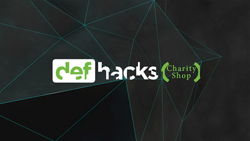

<div id="portfolio-page" class="portfolio-page-content">
    <div class="container">
        <div class="portfolio-nav">
            <div id="portfolio-close-button" class="portfolio-close-button">
                <a href="#portfolio"><i class="fa fa-close"></i></a>
            </div>
        </div>

        <div class="portfolio-title">
            <h1>Def Hacks Charity Shop</h1>
        </div>

        <div class="row">
            <div class="col-sm-7 col-md-7 portfolio-block">
                <div class="owl-carousel portfolio-page-carousel">
                    <div class="item">
                        
                    </div>
                </div>

                <script type="text/javascript">
                    jQuery(document).ready(function($){
                        $('.portfolio-page-carousel').owlCarousel({
                            smartSpeed:1200,
                            items: 1,
                            loop: true,
                            dots: true,
                            nav: true,
                            navText: false,
                            margin: 10
                        });
                    }); 
                </script>
            </div>

            <div class="col-sm-5 col-md-5 portfolio-block">
                <!-- Project Description -->
                <div class="block-title">
                    <h3>Description</h3>
                </div>
                <ul class="project-general-info">
                    <li><p><i class="fa fa-globe"></i> <a href="http://www.defhacks.io" target="_blank">charityshop.defhacks.io (dead now)</a></p></li>
                    <li><p><i class="fa fa-calendar"></i>Late 2016</p></li>
                </ul>

                <p class="text-justify">Def Hacks Charity Shop was meant to be an ecommerce extension to the 501c3 <a href="http://www.defhacks.io">Def Hacks</a>,
                a hackathon chain for high school and college students that I founded. the value hypothesis was that people
                would be more likely to purchase from an ecommerce shop if they knew that 100% of the proceeds were going
                to a nonprofit.</p>
                <!-- /Project Description -->

                <!-- User & Market Research -->
                <div class="block-title">
                    <h3>User & Market Research</h3>
                </div>
                <p class="text-justify">This was something I did when I did not have much product management experience,
                so I imprudently went ahead and built out the entire ecommerce shop without doing much research. In retrospect,
                it would have been wiser to just launch a one-product shop with a one size fits all product, such as a fidget spinner.
                    I would have promoted this one, mentioning that 100% of proceeds go to a nonprofit, and seen if people
                    purchase that item. If so, then I can expand the selection.
                peo</p>
                <!-- /User & Market Research-->

                <!-- Execution & Methodology -->
                <div class="block-title">
                    <h3>Execution & Methodology</h3>
                </div>
                <p class="text-justify">I built the entire site out and listed products that I found on AliExpress. I sold
                electronic products since I felt that fit the tech theme of Def Hacks. Google Adwords (the ad platform
                    for the google search ads you always see)awarded us a $120,000 yearly AdWords grant, so I used those
                funds to drive traffic to our site. I did not think to target people who cared about nonprofits, so the ads
                just targeted people who were searching for the items we were selling.</p>
                <!-- /Execution & Methodology-->

                <!-- Outcome -->
                <div class="block-title">
                    <h3>Outcome</h3>
                </div>
                <p class="text-justify">We did just over $650 in sales over three months. These are weak numbers for the
                budget we had, and if you factor in our very low conversion rate you'll realize that we could have done
                    much better. It would have been interesting to post a link to our shop on a site full of charitable
                people to see if they become loyal users on our site.</p>
                <!-- /Outcome-->

                <!-- Lessons -->
                <div class="block-title">
                    <h3>Lessons</h3>
                </div>
                <p class="text-justify">It's important to remember that (most) products are not designed to please
                everybody. We had a strong value-add in the 100% nonprofit donation area, and we should have sought out
                users who would appreciate that value rather than the generic category of consumers. It is unclear whether
                our product would have provided value to charitable people, but it is clear that it did not provide value
                to the majority of shoppers.</p>
                <!-- /Lessons-->

            </div>
        </div>
    </div>
</div>
